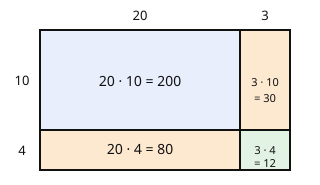

Schriftlich multiplizieren und dividieren
Mit einem KI-Tutor lernen
Ein KI-Tutor erklärt dir diese Seite und hilft dir bei den Aufgaben. Wähl deinen Assistenten:
Mit Claude öffnen Mit ChatGPT öffnen Mit Mistral Vibe öffnen
Du nutzt dein eigenes Konto beim Anbieter. Der Assistent ist kein Angebot von lernapps.net: lernapps liefert nur Inhalte und Aufgaben. Die Wahl gilt für alle Seiten, nur auf diesem Gerät.
Was du hier lernst
Wenn du wissen willst, wie viele Plättchen in einem großen Rechteck liegen, musst du malnehmen, und bei großen Zahlen hilft ein Verfahren. Nach dieser Seite kannst du Zahlen schriftlich malnehmen und teilen und das Ergebnis mit der Umkehraufgabe prüfen. Du brauchst das kleine Einmaleins und das Bündeln aus der Stellenwerttafel.
Eine Malaufgabe wie 4 · 12 kannst du dir als Rechteck aus Plättchen vorstellen: Anzahl der Reihen mal Anzahl der Plättchen in einer Reihe. Das Rechteck hat dann 4 Reihen mit je 12 Plättchen. Alle Plättchen zusammen sind das Ergebnis.
Aufgabe
Lösung
Richtige Antwort: 48
4 · 10 = 40 und 4 · 2 = 8. Zusammen sind das 48 Plättchen.
Das Rechteck zerlegen
Wenn die Zahlen zu groß für das Einmaleins sind, zerlegst du sie. Beim Multiplizieren zerlegst du die Zahlen in Stellenwerte. Das Rechteck zeigt 23 · 14: Seiten 20 und 3, 10 und 4. Die vier Teile rechnest du einzeln und addierst sie. Das schriftliche Verfahren macht genau das in Spalten.

© CC0-1.023 · 14 = 200 + 30 + 80 + 12 = 322.
Wenn du Plättchen gleichmäßig verteilen willst, teilst du. Beim Dividieren fragst du: Wie oft passt die Zahl, durch die du teilst, in die andere Zahl? Du teilst Stelle für Stelle von links und notierst, was übrig bleibt. Ein Rest wird entbündelt: 1 Hunderter sind 10 Zehner und kommen zur nächsten Stelle dazu.
- Produkt
Das Produkt ist das Ergebnis einer Multiplikation. In 23 · 14 = 322 sind 23 und 14 die Faktoren und 322 ist das Produkt.
Beispiel
756 : 6
Damit du siehst, wie das Teilen Stelle für Stelle läuft: 7 Hunderter : 6 = 1 Rest 1. Der Rest 1 Hunderter sind 10 Zehner, dazu 5 Zehner: 15 Zehner : 6 = 2 Rest 3. 3 Zehner sind 30 Einer, dazu 6 Einer: 36 : 6 = 6. Ergebnis: 126.
Beispiel schriftlich malnehmen
45 · 6
Wenn das Rechteck zu groß zum Zeichnen ist, rechnest du dasselbe in Spalten. Du rechnest von rechts. Einer: 5 · 6 = 30, schreibe 0, übertrage 3. Zehner: 4 · 6 = 24, dazu der Übertrag 3 ergibt 27. Ergebnis: 270.
Übung
Aufgabe
Drei Beispielaufgaben, jede mit ihrer Lösung:
Aufgabe Nr. 1
Rechne schriftlich: 38 · 5
Tipp
Zerlege die Zahl in Zehner und Einer: Beide Teile mit 5 malnehmen, dann addieren.
Lösung
Richtige Antwort: 190
Aufgabe Nr. 2
Rechne schriftlich: 66 · 3
Tipp
Zerlege die Zahl in Zehner und Einer: Beide Teile mit 3 malnehmen, dann addieren.
Lösung
Richtige Antwort: 198
Aufgabe Nr. 3
Rechne schriftlich: 88 · 4
Tipp
Zerlege die Zahl in Zehner und Einer: Beide Teile mit 4 malnehmen, dann addieren.
Lösung
Richtige Antwort: 352
Aufgabe
Drei Beispielaufgaben, jede mit ihrer Lösung:
Aufgabe Nr. 1
Rechne schriftlich: 165 : 5
Tipp
Teile Stelle für Stelle von links. Prüfe mit der Umkehraufgabe: Ergebnis mal 5.
Lösung
Richtige Antwort: 33
Aufgabe Nr. 2
Rechne schriftlich: 556 : 2
Tipp
Teile Stelle für Stelle von links. Prüfe mit der Umkehraufgabe: Ergebnis mal 2.
Lösung
Richtige Antwort: 278
Aufgabe Nr. 3
Rechne schriftlich: 598 : 2
Tipp
Teile Stelle für Stelle von links. Prüfe mit der Umkehraufgabe: Ergebnis mal 2.
Lösung
Richtige Antwort: 299
Aufgabe
Lösung
Richtige Antwort: Die Aussage stimmt.
Malnehmen und Teilen sind Umkehrungen voneinander. Kommt bei der Probe die Ausgangszahl heraus, stimmt die Rechnung.
Aufgabe
Lösung
Richtige Antwort: 322
200 + 30 + 80 + 12 = 322.
Fehler gefunden oder eine Idee für diese App?